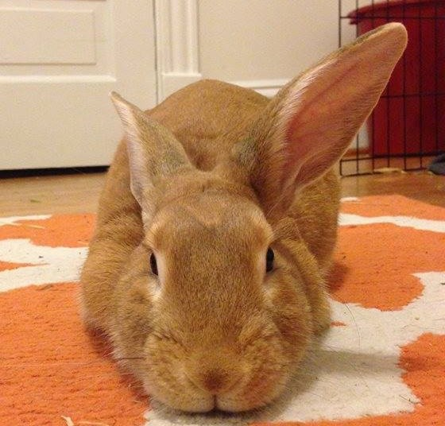
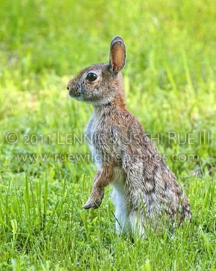
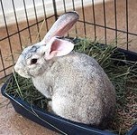
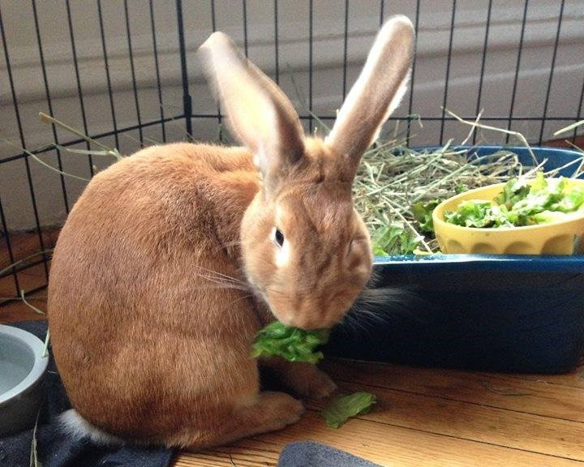
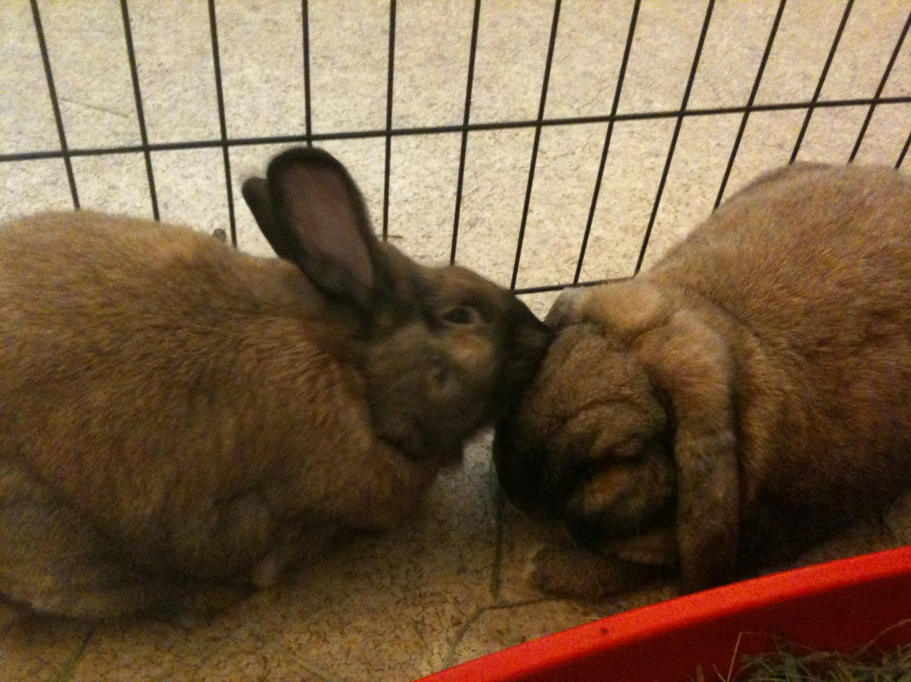
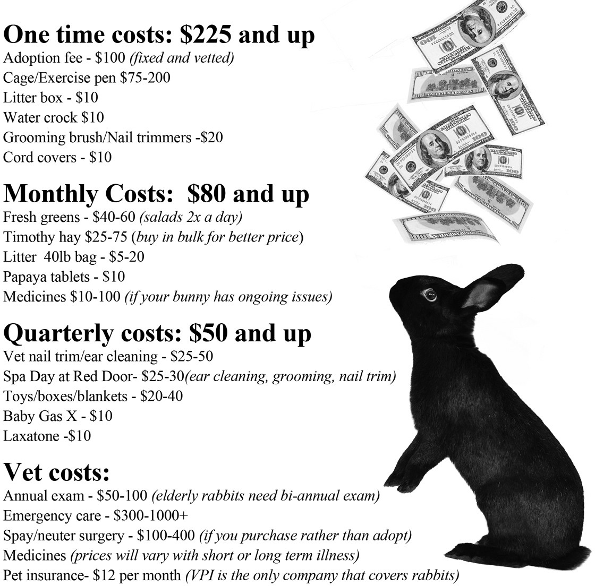

A Field Guide
The Great
Midwestern House Rabbit
Curious about having a rabbit for a pet? You've come to the right place.
Begin Exploring →
Rabbits are among the Midwest's most polarizing animals--adored by their guardians, despised by gardeners--misunderstood by parents and classroom teachers with good intentions. While pet rabbits (aka "house rabbits") can be playful and affectionate, their instincts as prey animals make them questionable companions to families with young children. Their upkeep requires vigilance, twice daily feeding of greens, and visits to exotics veterinarians, which average two or three times the cost of cats and dogs. Experienced rabbit owners, however, delight in their binkies (180-degreespins in the air), indicating delight, and their infinite variety of coat colors, patterns, and textures.
This guide covers the full spectrum of Leporidae family found in the Great Northwest states of Illinois, Ohio, and Iowa: house rabbits, wild cottontails, and escapee rabbits originallybred for meat

Leporidae
The rabbit family — from house bunnies to snowshoe hares. Luh-POUR-uh-dee.
Domestic House Rabbits
Indoor-only companions with lifespans of 8+ years, coming in many wonderful breeds.
Garden Rabbits
Cottontails — a different species from domestic rabbits, living wild with a lifespan under 3 years.

Meat Rabbits
Large, spirited breeds like New Zealand Whites — surprisingly great as adoptable pets.

Style of Pet
Curious and playful, but fragile. What to expect from life with a rabbit.

Bonding Process
Step-by-step: how to find and introduce a companion rabbit through the shelter.
Daily Upkeep
Hay, salad twice a day, a clean litter box — the rhythm of life with a bunny.

Expense
One-time, monthly, quarterly, and vet costs — a full financial picture of rabbit ownership.